Basic Usage
PhotoMapAI is organized into a series of photo albums. Each album is a collection of images on the local machine or a shared drive.
Creating an album
The first time you launch PhotoMapAI it will prompt you to create an album with the screen shown below.
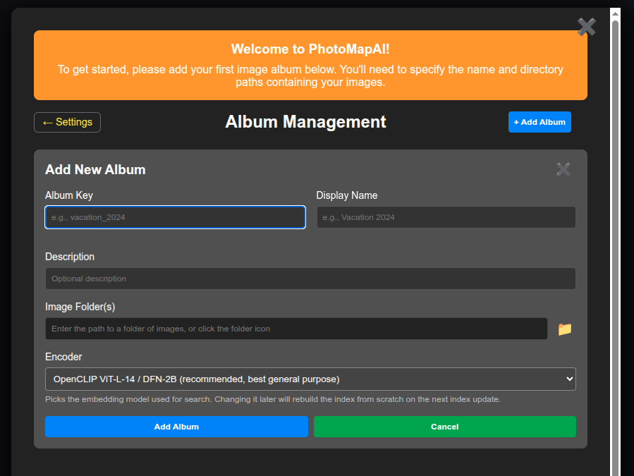
Enter a short lowercase key for the album, such as "family", a longer descriptive name such as "Family Photos 2025", and optionally a description of the album. (The key can be used in URLs if you wish to share a particular album in a text or email message as described here).
You'll now need to tell the album where its photos are stored. Enter one or more filesystem paths in the text field at the bottom named "Image Paths". Photos can be stored in a single large folder, or stored in multiple nestered folders. They can reside on the local disk or on a shared disk. If you wish, you can point the album to multiple folders, and their contents will be combined into a single album.
PhotoMapAI supports photos in JPEG, PNG, TIFF, GIF, and HEIC/HEIF formats.
The screenshot below shows the dialogue after populating it on a Linux or MacOS system. On Windows systems use the usual C:\path\to\directory notation.
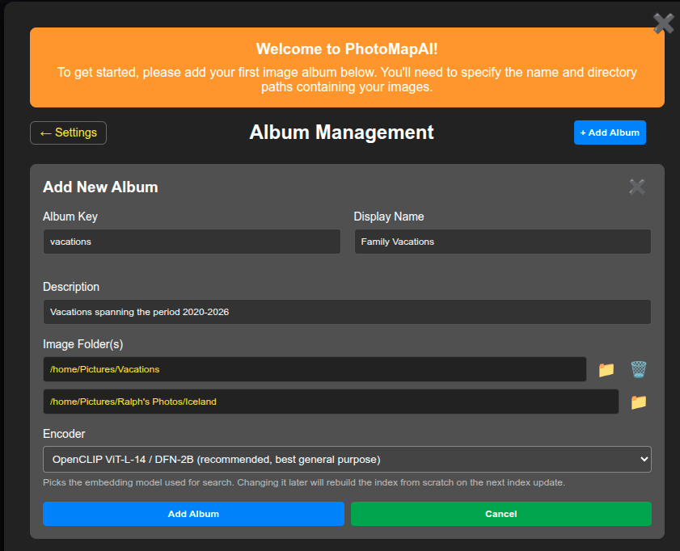
Once the album is set up to your liking, press the Add Album button at the bottom left and indexing will start:
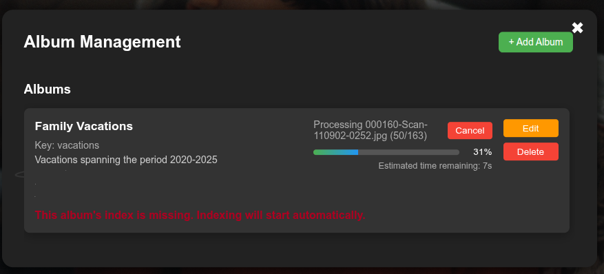
Indexing can take some time. On a system equipped with an NVidia GPU, indexing a collection of ~50,000 images will take about two hours. On a system with CPU only, the process will take overnight. Mac users with hardware accelerated M1/2/3 chips will see performance somewhere in between the two. It is suggested to start with a small collection of photos (1000-2000 images) for your first album in order to test PhotoMapAI and get comfortable with its features.
Once indexing is complete, the dialogue will close and you can start exploring your collection.
For more information on adding and modifying albums see Albums.
The Semantic Map
When you open an album for the first time, it will show the Semantic Map view, a scatterplot of all the photos in your album, clustered and colored by similarity.
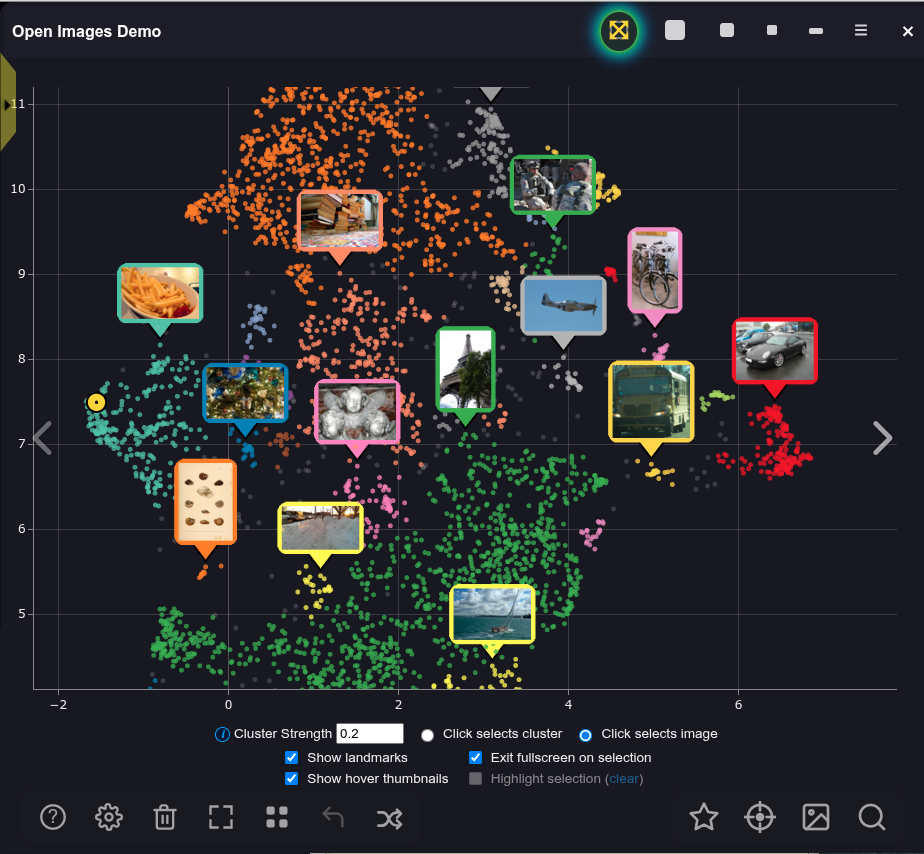
The initial view shows the entire collection, with a yellow target (far left side of the screenshot) marking the current photo on display. Use the mouse and scrollwheel to zoom in and out of the map and pan around. If you zoom in enough, you will see individual dots for each photo. The largest clusters are labeled with landmark images shown in the screenshot above as map markers pointing to major clusters. Hover the mouse over areas of interest to see larger thumbnail previews of the corresponding images. You can control whether landmarks and/or hover thumbnails are displayed by selecting those options in the checkboxes at the bottom of the screen.
Click on the album title ("Open Images Demo" in the screenshot) to switch from one album to another.
Click on a dot to load that photo into the album browsing display. This will also highlight the cluster that you clicked in and load the contents of the cluster into the search results. You can then use the navigation buttons or the grid view to scroll through the images in the selected cluster.
If you don't see anything, or if the colors are very faint, this means that there were insufficient images in the album to cluster well. You can fix this by increasing the cluster strength. Go to the Cluster Strength field and increase its value until you are satisfied with the cluster number and size.
If you hover over the top of the map, additional navigation controls appear for zooming in and out, panning, resetting to the default scale, and downloading the map as a PNG image.
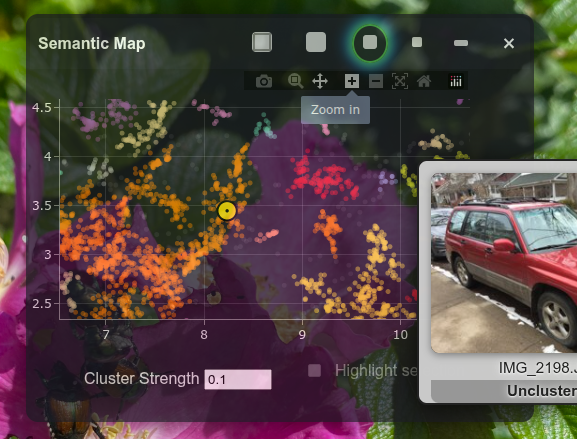
You can control the size and position of the semantic map. You can have it appear in fullscreen mode that covers the full size image display beneath it, or you can set it to be a semi-transparent window that floats on top of the full size image. See Semantic Map for more details.
You can completely close the semantic map at any time by clicking its close box or the Target (⊙) icon at the bottom of the screen (see the screenshot below). To reopen the map, click the Target icon again.
The Album Browsing Display
If you click on an image in the semantic map, or just close the window, you will see the album browsing display shown below. Hover over the screenshot to see the key to the various buttons and controls for album browsing:
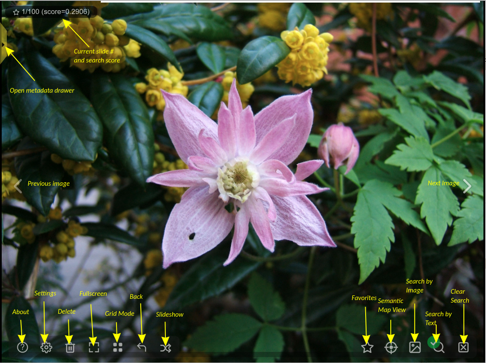
Going from left to right:
- The Previous image and Next image buttons advance the images in the album or current search.
- The About button shows the current version of the software and links to its home page.
- The Gear button opens up a dialogue that lets you adjust the behavior and appearance of PhotoMapAI.
- The Trash icon permanently deletes the current photo from the album and removes the disk file (after confirmation).
- The Fullscreen button puts PhotoMapAI into fullscreen mode and hides most of the control elements.
- The Grid icon toggles between showing one image at a time to showing a screen of thumbnails.
- The Back icon keeps track of your navigation and searches and lets you page back in the history. Right-clicking or long-pressing this button brings up clickable thumbnails of the most recent 12 images.
- The Play/Pause Slideshow button starts and stops a slideshow in which the photos autoadvance after a user-adjustable interval. Right or long-click the icon to choose between linear and shuffle modes.
- The Star icon displays the bookmarks menu, allowing you to display only favorited (starred) images, download starred images, or delete them. It also lets you enter curator mode for selecting diverse images for model training.
- The Target icon opens and closes the semantic map.
- The Bookmark icon opens a menu for managing bookmarked images, including options to show, download, or delete bookmarked photos.
- Clicking on the Landscape icon initiates a search for images similar to the one currently displayed.
- The Magnifier button opens up a search dialogue that lets you search by image similarity and/or a text description of image content.
- The "Clear search* button clears any search that is currently active and returns to album browsing mode.
Finally, the yellow tab with the black arrow on the left margin of the window opens the "metadata drawer", where you can see the image's EXIF date, including the date the photo was taken, GPS information (if available), and camera information. If the image was generated by the InvokeAI Image Generation package, then the generation parameters are displayed, along with controls that enable you to reload the image into InvokeAI and remix it.
Once you open the drawer up, you can drag it around by clicking on its title bars. Click the black arrow again to return it to its home location and close it.
Jumping Forward and Back
Hover the mouse near the top of the window to reveal a slider control that will let you seek forward and backward among the images. If no search is active, the slider shows the images sorted by their date. If an image or text similarity search is active, the slider changes to indicate the match score (higher numbers are better matches). If a cluster was selected with the semantic map, then the slider changes to indicate the slide numbers within the cluster.
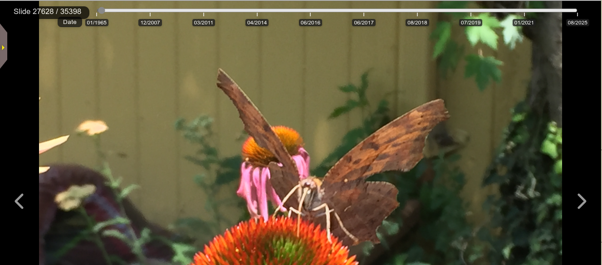
You can navigate through your album, enter and exit fullscreen, and start and stop the slideshow with a variety of keystrokes and gestures on touch-enabled devices. See Keyboard Shortcuts for details.
Viewing a Thumbnail Grid
At any time you can click on the Grid icon to shift from single-slide mode to grid mode:
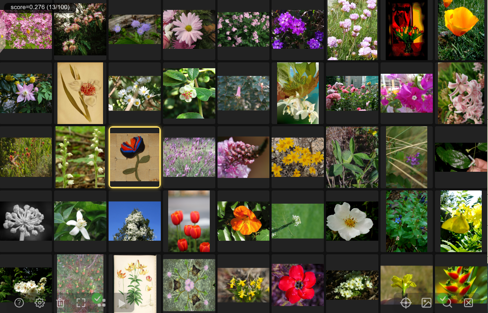
In grid mode, the arrow buttons move forward and back one screen's worth of thumbnails. Click on a thumbnail to select its image. When selected, the image's metadata will be displayed in the metadata drawer, and the semantic map will update to show the position of the current image. Double-click on a thumbnail in order to open the image at full resolution in browse mode.
You may also advance the grid using the slider control that appears when you hover near the top of the window.
Starting and Stopping the Slideshow
The slideshow button will start a slideshow. The current image will advance every five seconds. The interval can be changed in the settings dialog.
You can switch between sequential mode and shuffle mode by right clicking on the slideshow button or with a long press on a tablet or other touch-enabled device. Sequential mode displays the images in order of recentness, while shuffle mode randomizes the order. Please be aware that sequential mode relies on the image file creation date, which is not necessarily the date the image or photograph was originally taken.
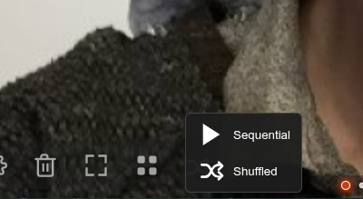
The slideshow mode can also be set in the settings dialogue.
Changing Settings
The Gear icon opens the settings dialogue, which allows you to adjust the appearance and behavior of PhotoMapAI:
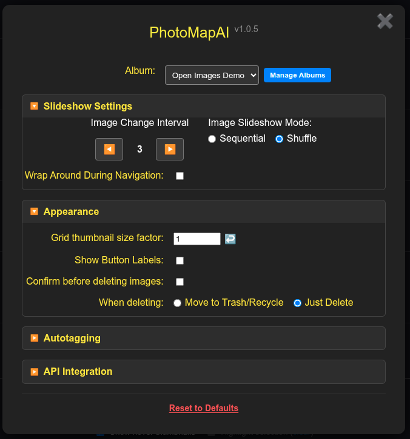
It has several collapsible sections:
Top portion
- Album -- This pulldown menu lists all the albums you have configured and allows you to switch among them. Note that when you switch albums, the settings dialogue will close immediately and the window will display the first photo from the selected albums.
- Manage Albums -- This green button will open the Album Manager, where you can create, edit and delete albums.
Slideshow Settings
- Image Change Interval -- When the slideshow is running, this controls how long each image will be displayed, in seconds.
- Image Slideshow Mode -- When the slideshow is running, or when you are browsing the album without an active search, this controls the order in which photos are displayed. "Random" will present the images in shuffled order, while "Sequential" will show them in sequential order. When viewing the whole album, images are ordered from oldest to newest. After performing a search, images will be ordered from best match to worst. When viewing a cluster, the images closest to where you clicked on the cluster are displayed first.
- Wrap Around During Navigation -- If selected, the last image in the album will wrap around to the first image when you advance beyond it. Similarly for the first image in the album if you navigate to the pevious image. If not selected, you cannot advance beyond the last image, or go backwards from the first.
Appearance
- Grid thumbnail size factor -- This allows you to change the size of the image thumbnails by scaling them from a maximum of 2.0 (double default size) to a minimum of 0.5 (half default size). Be aware that the grid takes longer to load with small thumbnails.
- Show Button Labels -- Disabling this checkbox allows you to turn off the labels on the row of clickable icons at the bottom of the screen for a more minimalist experience.
- Confirm before deleting images -- Disabling this checkbox stops the Trash Can icon from asking for confirmation before permanently deleting the current image from disk.
- When deleting -- Choose whether deleted images are moved to the Trash/Recycle bin or deleted immediately.
Autotagging
This portion of the Settings window has a single checkbox for activating Autotagging a feature that tags individual images and whole clusters with descriptive labels. See Autotagging for details.
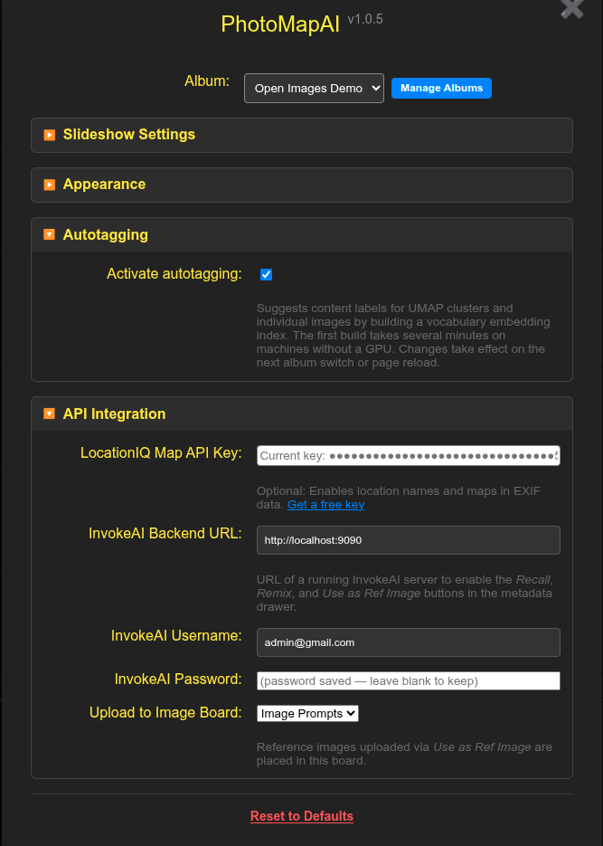
API Integration
These settings enable optional integration with third party services.
-
LocationIQ Map API Key -- This optional API key lets PhotoMapAI display thumbnail maps and named locations for photos that contain GPS geolocation information. If you wish to enable this feature, get a key for free from LocationIQ and paste it into the field. If not present, PhotoMapAI will display the longitude and latitude of the photo, but not the map or place name.
-
InvokeAI Backend URL -- If you use the InvokeAI locally-hosted AI image generation software, you can use PhotoMapAI to view your InvokeAI library, and send previously-generated images back to the software to remix or use as reference images. To active this support, paste the URL of the running InvokeAI backend into this field. You'll find more information in InvokeAI Integration.
-
InvokeAI Username, InvokeAI Password -- If a valid InvokeAI URL is present, these fields will appear. If you are running InvokeAI in password-protected "multiuser mode," these fields provide the InvokeAI username and password to log into.
-
Upload to Image Board -- If a valid InvokeAI URL is present, this pulldown menu allows you to select which InvokeAI gallery to upload reference images into.
-
Reset to Defaults -- This clears out settings, returning them to their default state. It will not delete albums or images.